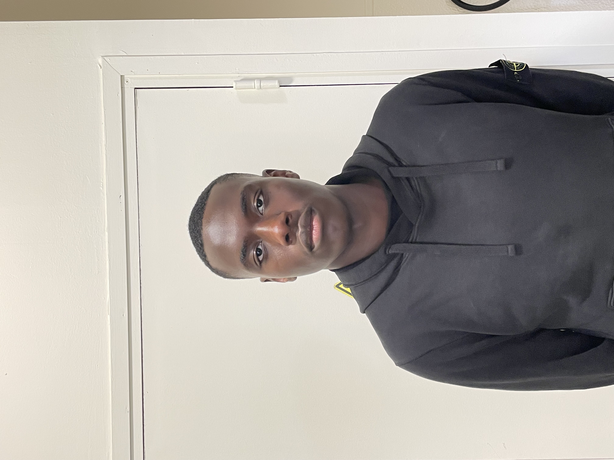

Jackson Nsimba
Je suis
À propos de moi
Étudiant en deuxième année de BTS SIO option SISR, je suis à la recherche d’un stage afin de mettre en pratique mes compétences dans le domaine des systèmes et réseaux. Sérieux, motivé et organisé, je m’investis pleinement dans mon travail et j’aime apprendre de nouvelles compétences. Je sais travailler aussi bien en autonomie qu’en équipe et je fais preuve d’adaptation et de rigueur.
Étudiant en BTS SIO SISR
Curieux et motivé, je m'investis dans mes études afin de développer des compétences solides en systèmes, réseaux et administration informatique.
- Anniversaire : 7 Septembre 2007
- Site internet : Mon portfolio
- Téléphone : 0753446569
- Ville : Le Mée-Sur-Seine
- Âge : 19 ans
- Email : Jackson77350@gmail.com
Compétences
Compétences acquises durant ma formation en BTS SIO SISR :
Réseau & Infrastructure
- Configuration et administration de réseaux LAN/WAN
- Gestion des serveurs Windows et Linux
- Installation et administration de machines virtuelles avec VirtualBox et VMware
- Supervision réseau et sécurité
- Configuration de firewall et VPN
- Câblage et mise en place de topologies réseau
Services & Déploiement
- Gestion des services réseau DHCP, DNS, FTP et HTTP
- Administration de postes clients
- Maintenance et dépannage informatique
- Gestion de parc informatique
- Documentation technique
- Mise en place de sauvegardes
Parcours
Résumé de mon parcours scolaire et de mes expériences.
Éducation
BTS SIO – 2ᵉ année
2026 - 2027
Lycée Léonard De Vinci, Melun
Option SISR – Solutions d'Infrastructure, Systèmes et Réseaux.
BTS SIO – 1ʳᵉ année
2025 - 2026
Lycée Léonard De Vinci, Melun
Baccalauréat Général
2024 - 2025
Institution Saint-Aspais, Melun
Spécialités Mathématiques et NSI.
Expériences Professionnelles
Babysitting
2023 - Présent
- Garde d’enfants et organisation d’activités éducatives
- Assurer la sécurité et le bien-être des enfants
- Aide aux devoirs et préparation des repas
- Communication avec les parents
Stage de 3ᵉ
2021
- Découverte du fonctionnement d’une entreprise du BTP
- Observation des équipes et des méthodes de travail
Acquisitions & Certifications
Certifications et acquis importants.
ASSR2
2021
Brevet des collèges
2022
Baccalauréat Général
2025
Code de la route & Permis B
2025
Certification PIX
2025
Contact
N'hésitez pas à me contacter pour toute demande concernant ma recherche de stage.
Adresse
Le Mée-Sur-Seine, France
Téléphone
0753446569
Jackson77350@gmail.com
Documents & CV
Retrouvez ici mon CV ainsi que quelques travaux réalisés durant ma formation en BTS SIO.
Mon CV
Consultez et téléchargez mon CV afin de découvrir mon parcours, mes compétences et mes expériences.
Télécharger mon CVTP Configuration réseau
Travail pratique portant sur la configuration réseau d'un serveur réalisé durant ma formation.
Voir le TPTP Création d'une clé bootable
Travail pratique consacré à la création et à l'utilisation d'une clé USB bootable.
Voir le TP